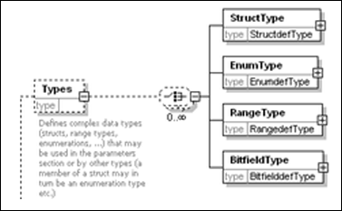
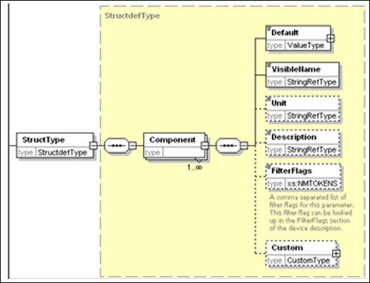

1.7.1. Basics¶
In the common part of a device description datatypes, located strings and referenced files can be specified.
<?xml version='1.0' encoding='UTF-8'?>
<DeviceDescription xmlns="http://www.3s-software.com/schemas/DeviceDescription-1.0.xsd" xmlns:ts="http://www.3s-software.com/schemas/TargetSettings-0.1.xsd">
<Types></Types>
<Strings></Strings>
<Files></Files>
...
</DeviceDescription>
Every single aspect is documented in the following subchapters.
1.7.1.1. Defining types¶
The Types section contains type definitions for bitfields, ranges, arrays resp. simple structures:
1.7.1.1.1. Bitfields¶
Example:
<Types namespace=" **localTypes** ">
<BitfieldType basetype=" **std:BYTE** " name=" **TbitFieldByte** ">
<Component identifier=" **Bit0** " type=" **std:BOOL** ">
<Default>**FALSE** </Default>
<VisibleName name=" **local:Bit0** "> **Bit0** </VisibleName>
</Component>
<Component identifier=" **Bit1** " type=" **std:BOOL** ">
<Default>**FALSE** </Default>
<VisibleName name=" **local:Bit1** "> **Bit1** </VisibleName>
</Component>
</BitfieldType>
</Types>
This example defines two bits. The base type is byte. The I/O mapping tab in CODESYS will show two bit addresses and 1 byte address.
<Parameter ParameterId="33554433" type="localTypes:TbitFieldByte">
<Attributes channel="input" download="true" offlineaccess="readwrite" />
<Default />
<Name name="local:Input1_1">Digital Input</Name>
</Parameter>
For defined parameters the type must be the namespace of the type section and name of the specified defined type.
1.7.1.1.2. Range types¶
The range type defines a subrange of a given base type. For example UDINT has a normal range from 0 to 4294967296. With the range type the maximum values are limited.
Example:
<RangeType basetype="std:UDINT" name="Trange">
<Min>16#0</Min>
<Max>16#1FFFFFFF</Max>
<Default>0</Default>
</RangeType>
1.7.1.1.3. Array types¶
Parameters can also be defined as arrays with “std:ARRAY[0..10] OF DWORD”. In the I/O configuration tab of the programming system however only one line will be available and for this reason only one variable could be mapped to the complete array. So it is a better solution to define the special array type. Up to three dimensions are possible and in the mapping tab for each element a separate line will be shown.
Example:
<ArrayType name="TestArray" basetype="std:DWORD">
<FirstDimension>
<LowerBorder>0</LowerBorder>
<UpperBorder>10</UpperBorder>
</FirstDimension>
</ArrayType>
<Parameter ParameterId="30" type="localTypes:TestArray">
<Attributes offlineaccess="readwrite" download="true" />
<Default>12</Default>
<Default>23</Default>
<Default>34</Default>
<Default>35</Default>
<Name name="local:NONE">Array</Name>
</Parameter>
A new parameter with the defined array type is created and also default values are set to the first four elements.
1.7.1.1.4. Simple structures¶
The structure type could define structures like in IEC:
Example:
TYPE TFMMU:
STRUCT
GlobStartAdr: DWORD;
Length: UINT;
END_STRUCT
END_TYPE
<StructType name="TFMMU">
<Component identifier="globstartadr" type="std:DWORD">
<Default>8000</Default>
<VisibleName name="local:globstartadr">Global Start Address</VisibleName>
</Component>
<Component identifier="length" type="std:uint">
<Default>1</Default>
<VisibleName name="local:length">Length</VisibleName>
</Component>
</StructType>
<Parameter ParameterId="32" type="localTypes:TFMMU">
<Attributes offlineaccess="readwrite" download="true" />
<Name name="local:NONE">Structure</Name>
</Parameter>
With this example a parameter with a structure is added. In the generic device configuration view all sub elements will be shown in separate lines.
1.7.1.1.5. Strings¶
The description files offer a mechanism for localized text display. The texts can be created in the form of tables and referenced via an identifier. Each table is identified via a unique namespace. The tables are separated by different namespaces in order to prevent overlaps of identifiers in different tables. Texts can be stored in each table in all supported languages. The Strings section is currently the only table defined in the description file. Further tables (e.g. import of general texts) will be supported in the future.
Within the description file texts are referenced via nodes of type StringRef. The node reference has the form “<namespace>:<identifier>”. The content of a StringRef node is used as default value if no entry is available in a suitable language and should therefore be written in English.
Each language node contains all texts for a language. The language identifier has the form <language code>-<country code> (“en-us”, “de-au”, ...). The default language is English (“en-en”). Under this node there is a String node for each stored text. The name attribute matches the text identifier and must not contain a colon.
1.7.1.1.6. Types¶
The type system of the description files is based on the IEC type system. However, not all IEC types are currently available. A number of IEC types are made available as standard data types. More complex types such as structures (StructType), enumerations (EnumType), range types (RangeType) and bit fields (BitfieldType) can be defined in this section.
Types are always referenced via a namespace and the type name as follows: “<namespace>:<name>”. All basic types are located in the “std” namespace. The following basic types are available:
| std:BOOL [5]_5 | Truth value (TRUE or FALSE) | std:REAL | Floating-point numbers, 32 bits |
| std:BYTE | 8 bits, logic | std:LREAL | Floating-point numbers, 64 bits |
| std:SINT | 8 bits, numeric | std:STRING | Character string, 80 characters max. |
| std:USINT | 8 bits, numeric, unsigned | std:BIT | Single bit (for inputs/outputs). |
| Std:WORD | 16 bits, logic | ||
| std:INT | 16 bits, numeric | ||
| std:UINT | 16 bits, numeric, unsigned | ||
| … | … | ||
| std:ULINT | 64 bits, numeric, unsigned |
The Types node has an attribute:
- namespace: This name defines the namespace for all types that were
- defined under this node.
Structures represent a composition of several elements, as is common practice in programming languages. These elements may be based on standard types, or further types may have been defined. Recursion of structures (directly or indirect) is not permitted.
The StructType has a name attribute. This name is used for referencing the type. Within the type any number of Component nodes can be defined, which define the individual elements of the structure. Each component has two attributes:
Identifier: Corresponds to the variable names of the structure member in IEC. It is used in CODESYS for accessing this structure member.
The nodes under a component describe this in more detail:
- Default contains the DefaultValue for this structure component.
- Depending on the type of the component the content is made up as follows (as at any point where a ValueType is expected)
- Simple type (int, string, bool, ...): The associated value as string.
- Enum: The identifier of the value used.
- Complex (composite) type, for example a further structure:
For each subvalue to be set an element node containing the value of the element (complex if required).
- VisibleName contains the component name to be displayed at the
- interface (a more user-friendly representation of the identifier). For the VisibleName any characters are permitted (including spaces and special characters). The content can be localized (StringRef).
- Unit: an optional unit designation for the value used. This value can
- be localized.
- Description of the node (can be localized).
- Custom enables customer-specific content to be stored that is not
- interpreted by the system (see CustomType section). A PlugIn can access these data during runtime. There is no transfer to the target system.
| [5] | Important: BOOL is internally mapped to a full byte and has the size 8 bits. This type is unsuitable for input/output channels representing an individual bit. In this case the data type std:BIT should be used. |
1.7.1.2. Defining strings for localization¶
In order to provide device specific strings in multiple languages, e.g. names and descriptions of parameters, the respective language entries can be added to the device description file:
Example:
<ParameterSection>
<Name name="local:GeneralParameters">General Parameters</Name>
<Parameter ParameterId="65792" type="std:BOOL">
<Attributes download="true" offlineaccess="read" />
<Default>FALSE</Default>
<Name name="local:SlaveOptional">Slave optional</Name>
<Description name="local:SlaveOptional">Slave optional</Description>
</Parameter>
</ParameterSection>
<Strings namespace="local">
<Language lang="en">
<String identifier="SlaveOptional">Slave optional (en)</String>
</Language>
<Language lang="de">
<String identifier="SlaveOptional">Slave optional (de)</String>
</Language>
</Strings>
In this example a parameter section “General Parameters” is created and one configuration parameter is added. The name attribute for the section name, parameter name and description is linking to a string table for localization. Two languages are added in preparation for getting translated. The name attribute “local:SlaveOptional” is composed of the namespace “local” and the string identifier “SlaveOptional”. So only the value for the string element has to be translated. The value of Name or Description will be the default string if the currently selected language in CODESYS is not found in the string table.
1.7.1.3. Defining files and adding icons and images¶
Like strings also files can be localized. This is done in a special “files” section.
Example:
<Files namespace="local">
<Language lang="en">
<File fileref="local" identifier="PCIcard">
<LocalFile>PCIcard.ico</LocalFile>
</File>
</Language>
</Files>
The file will be used as an icon in the device tree. This is defined in the DeviceInfo element.
Example:
<DeviceInfo>
<Name name="local:TypeName">SercosIII Master</Name>
<Description name="local:typedescription">Sercos III Master</Description>
<Vendor name="localStrings:_3S">CODESYS GmbH</Vendor>
<OrderNumber>1</OrderNumber>
<Icon name="local:PCIcard">PCIcard.ico</Icon>
</DeviceInfo>
With the “Icon” element the icon file is linked to the device. The value PCIcard.ico is the default value for the case that the language cannot be found. The “name” attribute is a combination of the namespace and identifier of the file section.